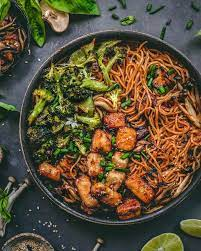

<!DOCTYPE html>
 <html lang="en">
    </html> 
    <head> 
     <h1> What's up guys, got a killer stir fry here. </h1>
        
     <body> 
      Damm this lookin good. 
      <h2>  To make is super easy. Put food in a pan and move it around until its cooked. In dish, use whatever you want. If you need a reference still I will provide, 
        </h2> <ul> 
                    <li>cheese balls</li> 
                    <li>hot dog grease</li> 
                    <li>muffin powder</li> 
                    <li>heat resistance oil</li> 
                    <li>ground cow hump</li> 
                    <li>mashed potatoes</li>
                    
     </body> 
     